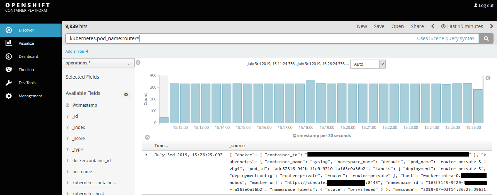

How to view your OpenShift router logs
Overview
UKCloud for OpenShift enables you to develop, deploy, and manage digital and container-based applications seamlessly across local physical or virtual environments, with full portability to and from UKCloud.
This article explains how you can view the connection logs generated by the OpenShift routers in your environment.
Intended audience
This article assumes familiarity with the Linux command line, and with the oc command set to manage an OpenShift cluster.
Prerequisites
To complete the steps in this article, you must have the oc command installed and have a suitable account on your OpenShift cluster. Specifically, it is assumed you know the authentication credentials that need to be supplied to oc login.
Your OpenShift cluster must be version 3.11 or later, and must be enabled for router logging. If your OpenShift routers do not have the "syslog" sidecar container enabled then raise a request on the UKCloud Portal requesting this functionality.
Viewing the logs for a specific router
Log in to OpenShift on the command line and change to the default project:
$ oc login ... $ oc project defaultCheck if the routers have the syslog container enabled:
$ oc get pods | grep router router-4-45r2t 2/2 Running 0 12d router-4-n7jg2 2/2 Running 0 12d router-private-3-lvbg4 2/2 Running 0 12d router-private-3-s2nbr 2/2 Running 0 12d # Since the container count for each router shows 2/2, the syslog container is presentIf your routers do not have the syslog sidecar container, raise a request in the UKCloud Portal to add this functionality. Your cluster must be v3.11 or later.
View the logs for a specific router:
# For router "router-4-45r2t": $ oc logs router-4-45r2t -c syslog 2019-07-03T13:41:28.573805+00:00 worker-infra-0 haproxy[506]: 37.69.33.21:49342 [03/Jul/2019:13:41:28.570] fe_sni~ be_secure:openshift-logging:logging-kibana/pod:logging-kibana-1-r8rkj:logging-kibana:10.177.0.13:3000 0/0/0/3/3 200 22810 - - --VN 10/5/0/1/0 0/0 "GET /bundles/2e90d5152ce92e3eb62ba053c7b9d2cb.woff HTTP/1.1" 2019-07-03T13:41:28.578731+00:00 worker-infra-0 haproxy[506]: 37.69.33.21:49345 [03/Jul/2019:13:41:28.575] fe_sni~ be_secure:openshift-logging:logging-kibana/pod:logging-kibana-1-r8rkj:logging-kibana:10.177.0.13:3000 0/0/0/2/2 200 23286 - - --VN 10/5/1/2/0 0/0 "GET /bundles/697573f67bcfdd2c45e3e63c7380dd67.woff HTTP/1.1" ...
The logs are shown in the HTTP haproxy log format. See https://cbonte.github.io/haproxy-dconv/1.7/configuration.html#8.2.3 for a guide on the fields.
Viewing logs for all routers in the cluster
The router syslog containers send their logs to the cluster's Elasticsearch database in the openshift-logging project. You can view this using Kibana as follows:
Locate the URL to access Kibana. You can find this in the
openshift-loggingproject using the Web UI or by using the command-line client as below:$ oc describe route logging-kibana -n openshift-logging | grep Host Requested Host: kibana.cnap-testing.frn00006.cna.ukcloud.comAccess Kibana by opening the URL using HTTPS (for example, https://kibana.cnap-testing.frn00006.cna.ukcloud.com) in a web browser. Login with your OpenShift/SSO credentials if prompted.
In the query box, enter
kubernetes.pod_name:router*and click the Search/Magnifying Glass button. This returns the logs for all routers. By default, logs for the last 15 minutes are shown. You can change this using the picker in the top right of the page.

Next steps
For more information about the UKCloud for OpenShift service, see:
Feedback
If you find an issue with this article, click Improve this Doc to suggest a change. If you have an idea for how we could improve any of our services, visit the Ideas section of the UKCloud Community.